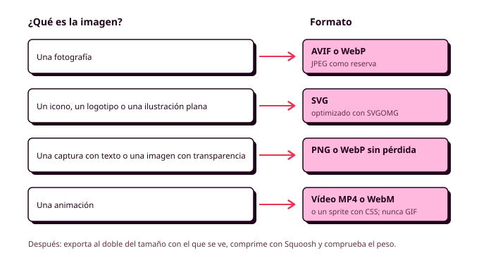

6. Multimedia y ecodiseño
En casi cualquier página web, lo que más pesa son las imágenes, los vídeos y las fuentes, muy por encima del HTML y del CSS. Tu hoja de estilos completa puede ocupar 10 KB, y una sola foto de la pista sacada con el móvil y subida tal cual, 4 MB. Esa foto la descarga Lucía cada vez que abre la aplicación desde el polideportivo, donde la cobertura es regular, y cada megabyte le cuesta tiempo, datos y batería. En este apartado vas a aprender a elegir el formato de cada archivo, a prepararlo y a integrarlo para que pese lo mínimo, y a usarlo respetando los derechos de quien lo creó (RA3, RA4).
Es también el apartado en el que más pesa el ecodiseño. Las Web Sustainability Guidelines del W3C (WSG) dedican varios criterios a la multimedia, y todos coinciden con lo que hace que una aplicación cargue rápido para todo el mundo.

Por qué importa el peso
El peso de una página es todo lo que el navegador tiene que descargar para mostrarla, y afecta a tus personas de tres formas: al tiempo que tardan en ver la pantalla, a los datos de su tarifa y a la energía que consumen su móvil, las antenas y los servidores. En la Órbita 1 anotaste la conexión de cada persona, y ahora ese dato decide: la persona con peor conexión marca el peso máximo de tu aplicación.
Por eso conviene fijar un presupuesto de peso antes de maquetar, un límite que no se puede superar. Para el polideportivo, pensando en Lucía, sería razonable que ninguna pantalla pase de 500 KB y ninguna imagen de 150 KB. El número depende de tu proyecto, y lo importante es que sepas explicar de dónde sale. En un equipo, el presupuesto es además un acuerdo que todos respetan: si alguien quiere añadir una imagen grande, tiene que quitar peso de otro sitio.
Para saber cuánto pesa una pantalla, abre la pestaña Red del inspector, marca Desactivar caché y recarga. Abajo verás el total, y puedes simular una conexión lenta para ver la pantalla como la vería Lucía.
Formatos de imagen
| Formato | Para qué | Comentario |
|---|---|---|
| AVIF | Fotografías | El que menos pesa |
| WebP | Fotografías y transparencias | Muy ligero y compatible con todo |
| JPEG | Fotografías, como reserva | Pesa más que los anteriores |
| PNG | Capturas con texto | Sin pérdida, pesado con fotos |
| SVG | Iconos, logotipos, ilustraciones sencillas | Es código: nítido a cualquier tamaño y muy ligero |
| GIF | Nada | Para animaciones, usa un vídeo, que pesa mucho menos |
Las fotografías van en AVIF o WebP y los iconos y el logotipo en SVG. Los formatos de fotografía comprimen con pérdida, descartando información que el ojo apenas ve, y una calidad entre 60 y 80 sobre 100 suele ser imposible de distinguir del original.
Tamaño y herramientas
El error más común es usar una imagen mucho más grande de lo que se ve. Una foto de 4000 píxeles mostrada en una tarjeta de 400 se ve igual que una de 800, pero pesa veinticinco veces más. La regla es exportar cada imagen al doble del tamaño máximo con el que se ve, porque las pantallas de los móviles tienen más píxeles de los que indica el CSS.
Para preparar las imágenes vas a usar tres herramientas gratuitas que funcionan en el navegador (RA3-c, RA3-d):
- Squoosh (squoosh.app) cambia el tamaño, el formato y la calidad, y te enseña el antes y el después con su peso.
- SVGOMG (svgomg.net) limpia los SVG que exporta Figma, que suelen quedarse en la mitad.
- Photopea (photopea.com) sirve para recortar o retocar antes de optimizar.
Las imágenes también son parte de tu sistema visual (RA3-h): usa las proporciones, los radios y el tratamiento de color de tu guía de estilo.
Imágenes en el HTML
Recuerda los atributos que viste en el repaso de HTML5 (alt, width, height) y añade los que deciden cuándo se carga cada imagen:
<img src="img/pista-padel-2-800.webp"
srcset="img/pista-padel-2-400.webp 400w,
img/pista-padel-2-800.webp 800w"
sizes="(width >= 64rem) 25rem, 100vw"
alt="Pista de pádel cubierta con paredes de cristal"
width="800" height="450"
loading="lazy">
loading="lazy"solo descarga la imagen cuando va a aparecer en pantalla. En un listado de diez pistas, si Lucía ve tres, las otras siete no se descargan. No lo uses en la imagen principal de la pantalla.srcsetofrece la misma imagen en varios tamaños, ysizesdice cuánto ocupará en pantalla. Con esos datos, el navegador descarga la más pequeña que se vea nítida.
Para saber más: <picture> y fetchpriority
El elemento <picture> permite ofrecer la misma imagen en varios formatos, y el navegador usa el primero que entiende:
<picture>
<source srcset="img/polideportivo.avif" type="image/avif">
<img src="img/polideportivo.webp" alt="Fachada del polideportivo" width="1600" height="900">
</picture>
También sirve para mostrar otro recorte de la foto en el móvil, con media en cada <source>. Y el atributo fetchpriority="high" le dice al navegador que descargue antes la imagen más importante de la pantalla.
Iconos en SVG
Un SVG es un fichero de texto, así que se ve nítido a cualquier tamaño y pesa muy poco. Para los iconos de la interfaz, lo más práctico es insertarlos en el HTML o desde un único fichero con todos los iconos (un sprite), y que sus trazos usen currentColor, para que cambien de color con el texto y con el modo oscuro:
<button class="button" type="button">
<svg class="button__icon" aria-hidden="true"><use href="img/iconos.svg#calendar"></use></svg>
Cambiar día
</button>
Vídeo y audio
El vídeo es lo más pesado de la web, así que antes de añadir uno pregúntate si aporta algo que no pueda contar una imagen. Si la respuesta es sí, usa el elemento <video> (RA4-e):
<video controls preload="none" width="1280" height="720" poster="img/como-llegar.webp">
<source src="video/como-llegar.webm" type="video/webm">
<source src="video/como-llegar.mp4" type="video/mp4">
<track kind="captions" src="video/como-llegar.vtt" srclang="es" label="Español">
</video>
controls muestra los controles del navegador, preload="none" no descarga nada hasta que se pulsa y poster muestra una imagen mientras tanto. Los subtítulos (<track>) los verás en la Órbita 4. Las WSG piden no reproducir vídeo de forma automática: gasta datos que nadie ha pedido, distrae y molesta. El audio funciona igual con <audio controls preload="none">, y si tiene información, necesita una transcripción.
Si el vídeo está en YouTube, su <iframe> carga mucho código aunque nadie lo reproduzca. Añádele loading="lazy" o, mejor, muestra una imagen con un enlace al vídeo.
Animar con imágenes fijas
Una animación sencilla, como una pelota que bota mientras se confirma la reserva, se puede hacer con una sola imagen que contiene todos los fotogramas uno al lado de otro (un sprite), desplazándola por pasos con CSS (RA3-f):
.bouncing-ball {
width: 4rem;
height: 4rem;
background: url("../img/pelota-sprite.webp") 0 0 / 32rem 4rem; // 8 fotogramas de 4rem
@media (prefers-reduced-motion: no-preference) {
animation: bounce 0.8s steps(8) infinite;
}
}
@keyframes bounce {
to { background-position: -32rem 0; }
}
steps(8) hace que la imagen avance en ocho saltos, uno por fotograma, y como solo se descarga una imagen, pesa muy poco. Recuerda respetar siempre prefers-reduced-motion.
Licencias
Que una imagen aparezca en un buscador no significa que puedas usarla: toda obra tiene derechos de autor desde que se crea, y solo puedes usarla con permiso de su autor o con una licencia que lo permita (RA3-a).
| Licencia Creative Commons | Significa que... |
|---|---|
| BY | Tienes que citar al autor |
| SA | Si la modificas, la compartes con la misma licencia |
| NC | No puedes usarla con fines comerciales |
| ND | No puedes modificarla |
| CC0 | Puedes usarla como quieras |
Bancos como Unsplash o Pexels tienen sus propias licencias, y Openverse busca imágenes con licencias abiertas. Anota en el README.md de dónde sale cada archivo, quién es su autor y con qué licencia lo usas, igual que hiciste con los iconos en la Órbita 2. Si generas una imagen con IA, anótalo en el CHANGELOG.md.
Antes de seguir
Revisa la multimedia de tu pantalla principal:
- Tienes un presupuesto de peso basado en tus personas, y la pantalla lo cumple.
- Las fotos están en AVIF o WebP, al doble de su tamaño como mucho y comprimidas.
- Los iconos son SVG optimizados.
- Las imágenes tienen
alt,widthyheight, y las que no se ven al abrir la pantalla,loading="lazy". - Nada se reproduce solo.
- Sabes de dónde sale cada archivo y con qué licencia lo usas.
- Lo has comprobado en dos navegadores y en un ancho de móvil (RA4-g).